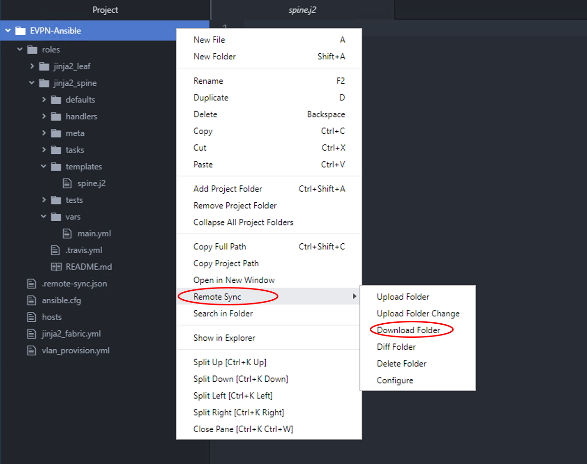

Steps for missing spine.j2 file
NOTE: If the file does not appear on the Atom, then go ahead and execute below 4 steps to get it sync. If the spine.j2 file appears in above folder then you can skip below 4 steps and proceed with your lab steps:
- On Ansible server (198.18.134.150) using your SSH session, change Directory to folder EVPN-Ansible using below command:
cd ~/EVPN-Ansible/
- further, change Directory (cd) to folder roles/jinja2_spine/templates using below command:
cd roles/jinja2_spine/templates/
- Type
touch spine.j2as shown below:
touch spine.j2
- After entering the command, go back to ATOM, right click on folder
EVPN-Ansible, scroll to choose optionRemote Syncoption and chooseDownload Folderas shown below:

Now that the file/folder appears properly on ATOM, go ahead and proceed with further steps on your lab guide